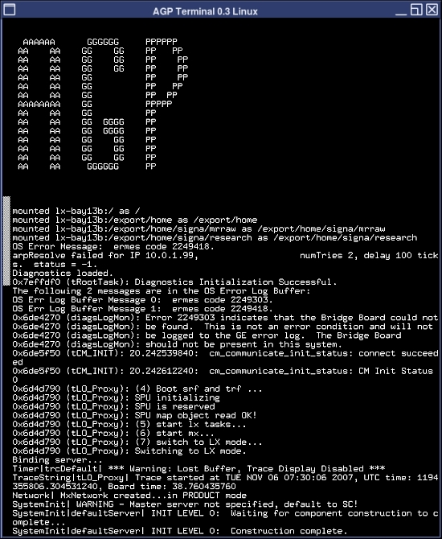

Operating Documentation
Direction 5670006, Rev# 1
Discovery MR750w GEM Service Methods
Module Version 3.0, Version Date 8/19/08
Operating Documentation |
| Required Persons | Preliminary Reqs | Procedure | Finalization |
|---|---|---|---|
| 1 | Not Applicable | 15 mins | 10 mins |
If the system is not working properly, you can try a TPS reset to re-initialize the CAM chassis. This document provides instructions for performing a TPS reset, and examples of the results output.
| NOTE: | In order to view the TPS reset output, you need to open a C Shell terminal and type mgd_term. The AGP and SCP windows open and will display the output. |
To perform a TPS reset, open the Common Services Desktop.
Under the Utilities tab, select TPS Reset from the left navigation pane.
Illustration 1:

Click [Reset] to begin the reset.
You will see this sequence of messages:
Reset/Download TPS was successful.
Reset/Download TPS in progress.
TPS has been reset.
The reset is complete. Proceed to the results examples in Finalization.
See Illustration 2 for an example of the typical output of the AGP terminal and Illustration 3 for an example of the SCP terminal from a successful TPS reset.
Illustration 2: Typical AGP Output

Illustration 3: Typical SCP Output

Illustration 4: TPS Reset Failure